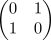
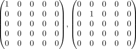
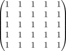
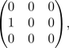
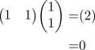
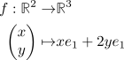

LinAlg 1 - extra wahr / falsch Aufgaben zu Vektorräumen und Matrizen (Lösungen)
Liste
Vektorräume & Matrizen
Sei $K$ ein Körper. Sei im Folgenden $\varphi: V \rightarrow W$ eine K-lineare Abbildung zwischen endlich dimensionalen K-VR.
i) Falsch
Sei $M \subseteq V$ eine Teilmenge und $\varphi[M] \subseteq W$ ein UVR. Dann ist $M$ auch ein UVR von $V$. Falsch wenn die Abbildung nicht injektiv ist: wähle z.B. $M = \mathrm{ker}(\varphi) \setminus \{0\}$ so dass $M$ ein UVR ist.
ii) Wahr
Seien $v \neq v'$ Vektoren in $V$, so existiert eine K-lineare Abbildung $f: V \rightarrow K$ mit $f(v) \neq f(v')$ Wahr
iii) Wahr
Seien $V,W$ Vektorräume über dem Körper $K = \mathbb{Z}/p \mathbb{Z}$ und $\psi: V \rightarrow W$ ein Gruppenhomomorphismus zwischen den additiven Gruppen. Dann ist $\psi$ schon ein Vektorraumhomomorphismus.
iv) Wahr
Seien $V,W$ Vektorräume über dem Körper $K = \mathbb{Q}$ und $\psi: V \rightarrow W$ ein Gruppenhomomorphismus zwischen den additiven Gruppen. Dann ist $\psi$ schon ein Vektorraumhomomorphismus.
v) Falsch
Sei $\{v_1,...,v_n\}$ eine Basis von $V$ und $U \subseteq V$ ein UVR. Dann ist $U \cap \{v_1,...,v_n\}$ eine Basis von $U$ z.B. $V = \mathbb{R}^2, v_1 = e_1, v_2 = e_2, U = \langle v_1 + v_2\rangle$
vi) Falsch
Wenn $\{v_1,v_2,v_3\}$ linear abhängig ist, dann ist $v_3$ eine Linearkombination von $v_1$ und $v_2$. Falsch für z.B. $\{(1,0), (2,0), (0,1)\}$
vii) wahr
Es gilt $\mathrm{dim}_K(K^{n \times m}) = n \cdot m$ wahr: LinAlg 1 - paar Dimensionen von Vektorräumen
viii) falsch
Sei $A: K^n \rightarrow K^n$ ein Automorphismus. Dann ist $\mathrm{tr}(A) = \mathrm{dim}_K(K^n) = n$ z.B.

ix) falsch
$\varphi$ bildet linear unabhängige Mengen auf linear unabhängige Mengen ab. falsch, z.B. $\varphi: V \rightarrow 0$
x) falsch
Jeder VR besitzt stets mindestens zwei UVR. Falsch, z.B. für $V = 0$
xi) falsch
Für beliebige Matrizen $A,B \in K^{n \times n}$ gilt: $(A + B)^2 = A^2 + B^2 + 2AB$ Falsch, da $(A + B) \cdot (A + B) = A^2 + B^2 + AB + BA$
xii) wahr
Es existieren Matrizen $A,B \in K^{5 \times 5} \setminus \{0\}$ mit $A \cdot B = 0$ Wahr, z.B.

oder

in $\mathbb{Z}/ 5 \mathbb{Z}$
xiii) wahr
Es existiert eine Matrix $A \in K^{5 \times 5} \setminus \{0\}$ mit $A \cdot A = 0$ siehe oder

xiv) falsch
Für $A \in K^{n \times n}$ gilt $\mathrm{det}(A + E_n) = \mathrm{det}(A) + 1$ Falsch, z.B. für $A = E_n$ und $n \geq 2$
xv) falsch
Für $A,B \in K^{n \times n} \setminus \mathrm{GL}_n(K)$ gilt $\mathrm{det}(A + B) = 0$ Falsch, z.B. für $A = \begin{pNiceMatrix} 1 & 0 \\ 0& 0 \end{pNiceMatrix}, B = \begin{pNiceMatrix} 0 & 0 \\ 0 & 1 \end{pNiceMatrix}$
xvi) - falsch
Sei $f: V \rightarrow V$ eine \(K\)-lineare Abbildung, so folgt $\mathrm{ker}(f) \cap \mathrm{im}(f) = \{0\}$ falsch, z.B. für
xvii) - falsch
Sei $A \in K^{n \times n}$ eine Matrix und $B = A^t$ die transponierte. Seien $\varphi_A, \varphi_B: K^n \rightarrow K^n$ die zugehörigen VR-Homomorphismen. Dann gilt $\mathrm{im}(\varphi_A) = \mathrm{im}(\varphi_B)$
falsch, z.B. für
xviii) - wahr
Sei $A \in K^{n \times n}$ eine Matrix und $B = A^t$ die transponierte. Seien $\varphi_A, \varphi_B: K^n \rightarrow K^n$ die zugehörigen VR-Homomorphismen. Dann gilt $\mathrm{dim}_K(\mathrm{im}(\varphi_A)) = \mathrm{dim}_K(\mathrm{im}(\varphi_B))$
Wahr, z.B. durch den Rangsatz
xix) - falsch
Sei $A \in K^{n \times n}$ eine Matrix und $B \in K^{n \times m}$ Sei $C = (A,B) \in K^{n \times (n + m)}$. Dann gilt $\mathrm{rank}(C) = \mathrm{rank}(A)$
xx) - falsch
Sei $A \in K^{n \times n}$ eine Matrix und $B \in K^{n \times m}$ Sei $C = (A,B) \in K^{n \times (n + m)}$. Dann gilt $\mathrm{rank}(C) \neq \mathrm{rank}(A)$
xxi) - wahr
Sei $A \in K^{n \times n}$ eine Matrix und $B \in K^{n \times m}$ Sei $C = (A,B) \in K^{n \times (n + m)}$. Dann gilt $\mathrm{rank}(C) \geq \mathrm{rank}(A)$
xxii) - falsch
Sei $A \in K^{n \times n}$ eine Matrix und $B \in K^{n \times m}$ Sei $C = (A,B) \in K^{n \times (n + m)}$. Dann gilt $\mathrm{rank}(C) \leq \mathrm{rank}(A)$
xxiii) - falsch
Sei ein lineares Gleichungssystem
gegeben. Seien $(\beta_1,...,\beta_n), (\beta_1',...,\beta_n')$ Lösungen vom linearen Gleichungssystem. Dann ist auch $(\beta_1 + \beta_1',...,\beta_n + \beta_n')$ eine Lösung.
xxiv) - falsch
Die Abbildung
ist linear für $m,t_0 \in \mathbb{R}$
xxv) - falsch 2
Sei $A \in K^{n \times n}$ eine Matrix mit $A^t = \alpha A$ für ein $\alpha \in K \setminus \{1\}$. Dann folgt $A = 0$
Sei z.B. $\alpha = -1$, dann ist $A = \begin{pNiceMatrix} 0 & 1 \\ -1 & 0 \end{pNiceMatrix}$ ein Gegenbeispiel.
Es gilt dagegen: Sei $\alpha \in K$ mit $\alpha^2 \neq 1$. Dann folgt aus $A^t = \alpha A$ auch $A = 0$.
siehe:
xxvi) - falsch
Es gilt für $A \in K^{n \times n}$
xxvii) - falsch
Es gilt für $A \in K^{n \times n}$ und $\alpha \in K$
xxviii) - falsch
Es gilt für $A \in \mathrm{Gl}_n(K)$
xxix) - wahr
Sei $A \in K^{n \times n}$ so dass die Abbildung
surjektiv ist. Dann folgt $\mathrm{det}(A) \neq 0$
xxx) - wahr
Sei $A \in K^{n \times n}$ so dass die Abbildung
surjektiv ist. Dann folgt $\mathrm{det}(A) \neq 0$
xxxi) - falsch 1
Es existiert eine Matrix $A \in K^{n \times n}$ mit $\mathrm{det}(A) = 0$ so dass
injektiv ist
wenn $\mathrm{det}(A) = 0$, dann kann die dazu korrespondierende Abbildung nicht bijektiv/invertierbar sein. Da $\mathrm{dim}(K^n) = \mathrm{dim}(K^n) < \infty$ folgt auch durch Kontraposition, dass $A$ nicht injektiv sein kann.
xxxii) - wahr
Der Schnitt von zwei Untervektorräumen ist nichtleer.
Der Nullvektor ist zwingend enhalten.
xxxiii) - falsch
Sei $K^n$ gegeben und $U_1,U_2$ zwei $n-1$ dimensionale Unterräume. Dann ist $U_1 \cap U_2$ ein $n-2$ dimensionaler Raum
Es kann $U_1 = U_2$ gelten
xxxiii) - wahr
Die Relation
definiert eine Äquivalenzrelation auf $V \setminus \{0\}$
xxxiv) - wahr
Sei $V$ ein endlich erzeugter Vektorraum. Dann ist $V$ auch endlich dimensional.
xxxv) - falsch
Jeder Vektorraum besitzt eine kanonische Basis. Basen besitzen
Ich wollte die Aufgabe stellen, um zu verdeutlichen, dass Vektorräume keine eindeutige / kanonische Basis besitzen. Wenn man eine Basis haben möchte, dann muss man (willkürlich) eine Basis wählen, d.h. man kann auch insbesondere nicht von "der Basis eines Vektorraums" sprechen.
Z.B. ist $\mathbb{R}$ ein \(\mathbb{Q}\)-Vektorraum und man kann mit Hilfe vom Lemma von Zorn (welches äquivalent zum Auswählaxiom ist) zeigen, dass eine Basis existiert, aber man kann auch Modelle von Mengentheorie (genauer: ZF) konstruieren, in denen man beweisen kann, dass $\mathbb{R}$ keine Basis als \(\mathbb{Q}\)-Vektorraum besitzt.
xxxvi) - falsch
Sei $\{v_1,...,v_{n-1}\}$ eine $n-1$ elementige Teilmenge von $K^{n}$. Dann existiert ein $v_n$ so dass $\{v_1,...,v_{n-1},v_n\}$ eine Basis ist.
xxxvii) - falsch
Sei $\{v_1,...,v_{n+1}\}$ eine $n+1$ elementige Teilmenge von $K^{n+1}$. Dann ist eine Teilmenge von $\{v_1,...,v_{n+1}\}$ eine Basis.
xxxviii) - falsch
Seien $V,W$ endlich dimensionale Vektorräume und $\varphi: V \rightarrow W$ ein VR-Mono. Dann ist $\varphi$ auch ein VR-Iso
xxxix) - wahr
Sei $A \in \mathbb{Q}^{n \times m} \subseteq \mathbb{R}^{n \times m}$ eine Matrix bzw. das dazugehörige Lineare Gleichungssystem. Angenommen $A$ hat reelle Lösungen, dann hat $A$ auch rationale Lösungen.
xl) - wahr
Seien $V,W$ endlich erzeugte \(\mathbb{Q}\)-Vektorräume und $f: V \rightarrow W$ eine \(\mathbb{Q}\)-lineare Abbildung. Angenommen $\mathrm{dim}_K(V) > \mathrm{dim}_K(W)$, dann folgt für $w \in \mathrm{im}(f)$
xli) - wahr
Sei $V$ ein endlich dimensionaler VR und $L_1,L_2: V \rightarrow V$ VR-Endomorphismen. Dann gilt
xlii) - falsch
Sei $V$ ein endlich dimensionaler VR und $L_1,L_2: V \rightarrow V$ VR-Endomorphismen. Dann gilt
xliii) - falsch
Sei $V$ ein endlich dimensionaler VR und $L_1,L_2: V \rightarrow V$ VR-Endomorphismen. Dann gilt
xliv) - falsch
Sei $U \subseteq V$ eine additive untergruppe von einem \(K\)-Vektorraum. Dann ist $U$ schon ein UVR
xlv) - falsch
Es existiert ein Körper $K$, so dass $\mathbb{Z}$ ein \(K\)-VR ist.
xlvi) - falsch
Für jeden VR-Endomorphismus $f: V \rightarrow V$ gilt
xlvii) - wahr
seien $f: V \rightarrow W, g: W \rightarrow V$ \(K\)-linear und $g \circ f = \mathrm{id}_V$. Dann gilt
xlviii) - wahr
seien $f: V \rightarrow W, g: W \rightarrow V$ \(K\)-linear und $g \circ f = \mathrm{id}_V$. Dann gilt
xlix) - wahr
Sei $f: V \rightarrow V$ eine K-lineare abbildung zwischen endlich dimensionalen VR. Dann sind äquivalent
- $V = \mathrm{im}(f) + \mathrm{ker}(f)$
- $V = \mathrm{im}(f) \oplus \mathrm{ker}(f)$
l) - wahr
Sei $p$ eine Primzahl, dann existiert ein Lineares Gleichungssystem über $\mathbb{Z}/p \mathbb{Z}$ mit genau $p-1$ vielen Lösengen
Es gibt für $p =2$ z.B. das Gegenbeispiel $x = 1$. Für $p \neq 2$ ist die Aussage aber falsch
li) - wahr
Sei $V$ ein 7-dimensionaler K-VR und $U_1,U_2$ UVR von dimension $5$ und $4$. Dann ist $U_1 \cap U_2$ mindestens 2 dimensional
lii) - wahr
Sei $A \in K^{n \times n}$ mit $A \cdot A^t = E_n$ Dann gilt $\mathrm{det}(A) = \pm 1$
liii) - falsch
Sei $A \in K^{m \times n}$ so dass die induzierte Abbildung $f: K^n \rightarrow K^m$ surjektiv ist. Dann folgt dass $A \cdot A^t: K^m \rightarrow K^m$ invertierbar ist.
Sei $K = \mathbb{Z}/2 \mathbb{Z}$ und $A = \begin{pNiceMatrix} 1 & 1 \end{pNiceMatrix}$. Dann folgt

also ist die Abbildung nicht invertierbar
liv) - wahr
Es existiert ein endlich dimensionaler K-VR $V$ und endomorphismen $f_1,f_2: V \rightarrow V$ mit
- $f_1,f_2 \neq 0$
- $f_1 \circ f_2 = f_2 \circ f_1 = 0$
wahr, siehe xiii)
lv) - wahr
Sei $V$ ein endlich dimensionaler K-VR und $f_1: V \rightarrow V$ ein nicht-invertierbarer Endomorphismus. Dann existiert ein Endomorphismus $f_2$ mit
- $f_2 \neq 0$
- $f_1 \circ f_2 = f_2 \circ f_1 = 0$
lvi) - falsch
Sei $V$ ein endlich dimensionaler K-VR und $f_1: V \rightarrow V$ ein Endomorphismus. Dann existiert ein Endomorphismus $f_2$ mit
- $f_2 \neq 0$
- $f_1 \circ f_2 = f_2 \circ f_1 = 0$
Wenn $f_1$ invertierbar ist, dann folgt aus $f_1 \circ f_2 = 0$ auch schon $f_2 = 0$
lvii) - wahr
Sei $f: V \rightarrow W$ ein VR-Homomorphismus. Sei $\{v_1,...,v_n\}$ linear unabhängig und $\mathrm{ker}(f) \cap \{v_1,...,v_n\} = \emptyset. Dann ist auch \{f(v_1),...,f(v_n)\}$ linear unabhängig.
lviii) - falsch
Sei $f: V \rightarrow W$ ein VR-Homomorphismus. Angenommen $\{f(v_1),...,f(v_n)\}$ ist linear unabhängig und hat $n$ elemente. Dann ist auch $\{v_1,...,v_n\}$ linear unabhängig.
lix) - wahr
Sei $W \subseteq V$ eine Teilmenge. Angenommen jede endliche Teilmenge von $W$ ist linear unabhängig. Dann ist auch $W$ linear unabhängig.
lx) - wahr
Sei $f: V \rightarrow W$ ein VR-Homomorphismus. Sei $\{v_1,...,v_m\}$ linear unabhängig so dass $\{v_1,...,v_n\}$ eine Basis von $\mathrm{ker}(f)$ ist. Dann ist $\{f(v_{n+1}),...,f(v_{m})\}$ linear unabhängig.
Sei $\sum_{i} \lambda_i f(v_{n+i}) = 0$ eine Linearkombination. Dann folgt $f(\sum_{i} \lambda_i f(v_{n+i}) = \sum_{i} \lambda_i f(v_{n+i}) = 0$ und damit $\sum_{i} \lambda_i v_{n+i} \in \mathrm{ker}(f)$. Da aber $\{v_1,...,v_m\}$ linear unabhängig ist, folgt $\langle v_1,...,v_{n}\rangle \cap \langle v_{n+i},...,v_{m} \rangle = \langle v_1,...,v_n\rangle \cap \mathrm{ker}(f) = 0$
lxi) - falsch
Sei $f: W \rightarrow V$ ein VR-Homomorphismus. Sei $\mathcal{B}$ eine Basis von $W$, so dass $f[\mathcal{B}]$ eine Basis von $V$ ist. Dann ist $f$ ein Isomorphismus.
z.b. die Projektion
lxii) - wahr
Sei $f: W \rightarrow V$ ein VR-Homomorphismus. Sei für jede Basis $\mathcal{B}$ von $W$ das Bild $f[\mathcal{B}]$ eine Basis von $V$. Dann ist $f$ ein Isomorphismus.
lxiii) - falsch
Sei $f: W \rightarrow V$ ein VR-Homomorphismus. Sei $\mathcal{B}$ eine Basis von $W$, so dass $f[\mathcal{B}]$ linear abhängig ist. Dann ist $f$ ein VR-Epimorphismus.
z.B. die Abbildung

bildet $\begin{pNiceMatrix} 1 \\ 0 \end{pNiceMatrix}, \begin{pNiceMatrix} 0 \\ 1 \end{pNiceMatrix}$ auf $e_1,2 e_1$ ab, was linear abhängig ist.
lxiv) - wahr
Sei $f: W \rightarrow V$ ein VR-Homomorphismus. Sei für jede Basis $\mathcal{B}$ von $W$ das Bild $f[\mathcal{B}]$ linear unabhängig von $V$. Dann ist $f$ ein Monomorphismus.
lxv) - wahr
Die Abbildung
ist \(\mathbb{Z}/2 \mathbb{Z}\)-linear
Tatsächlich gilt $f(0) = 0, f(1) = 1$ also insbesondere $f = \mathrm{id}$. Die Identität ist natürlich K-Linear, also ist die Aussage wahr.
Es stimmt aber, dass die Abbildung $x \mapsto x^2$ fast nie K-Linear ist.
lxvi) - wahr
Es existiert ein K-VR, so dass $\emptyset$ eine Basis ist.
Der Nullraum
lxvii) - wahr
Sei $V$ ein endlich erzeugter K-VR und $W$ ein UVR. Dann existiert ein endomorphismus $f: V \rightarrow V$ so dass ein VR-Isomorphismus $V/\mathrm{ker}(f) \cong W$ existiert.
lxviii) - wahr
Sei $U \subseteq V$ ein UVR. Sei $v \in U, w \in V \setminus U$, dann gilt $v + u \not\in U$
lxix) - falsch
Sei $U \subseteq V$ ein UVR. Sei $\lambda \in K$ und $v \in V \setminus U$, dann gilt auch
lxx) - falsch
Sei $f: V \rightarrow W$ kein VR-Isomorphismus. Dann folgt $\mathrm{dim}_K(V) \neq \mathrm{dim}_K(W)$
lxxi) - falsch
Sei $V$ ein Vektorraum und $U$ ein Untervektorraum mit $\mathrm{dim}_K(V) = \mathrm{dim}_K(U)$. Dann folgt auch $U = V$
z.B. $(\prod_{-n \in \mathbb{N}} 0) \oplus (\prod_{n \in \mathbb{N}_0} K) \subseteq \prod_{n \in \mathbb{Z}} K$
lxxii) - wahr
Sei $V$ ein endlich erzeugter Vektorraum und $U$ ein Untervektorraum mit $\mathrm{dim}_K(V) = \mathrm{dim}_K(U)$. Dann folgt auch $U = V$
lxxiii) - wahr
Jede Teilmenge einer linear unabhängigen Menge ist linear unabhängig.
lxxiv) - wahr
Seien $V,W$ K-VR mit $\mathrm{dim}_K(V) = 5, \mathrm{dim}_K(W) = 3$ und $f: V \rightarrow W$ ein VR-Epi. Dann existiert ein Unterraum $U$ mit $\mathrm{dim}_K(U) = 2$ und einem VR-Iso $V/U \rightarrow W$
lxxv) - falsch
Seien $\{v_1,...,v_m\}, \{w_1,...,w_n\}$ Erzeugendensysteme von $V$. Dann gilt $m = n$